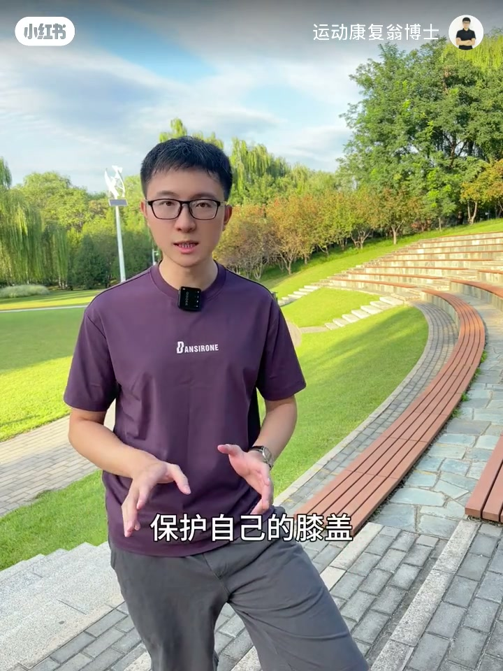
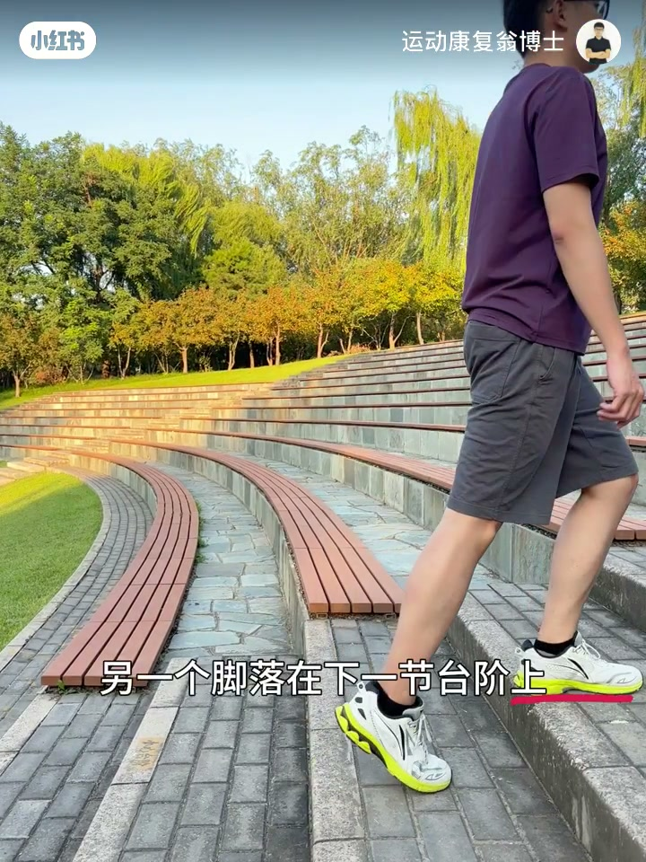
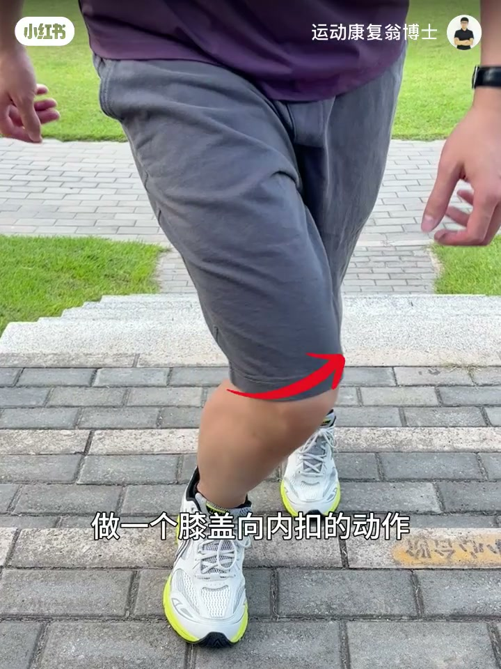
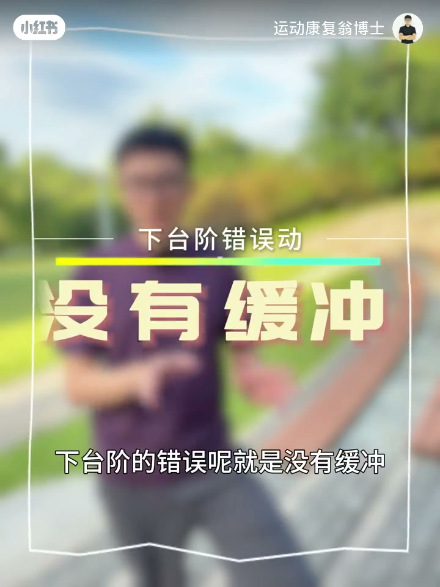
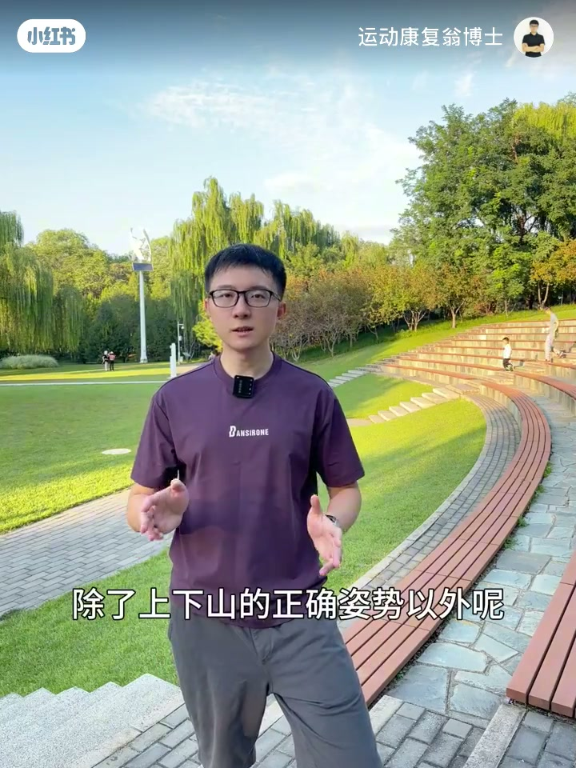
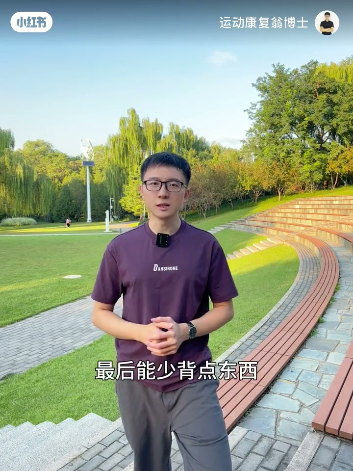

内容要点
运动康复翁博士在户外台阶示范：上山少用小腿后侧、多用臀部，眼不要死盯脚下；避免膝盖内扣，膝与脚尖同向并找臀中肌；下山必须有缓冲，勿让脚跟砸地；尽量双杖并减负。口播中后段清晰，开头有 ASR 空洞，结合字幕补全。
知识结构
臀发力不足会改用小腿后侧；勿含胸驼背，目光看台阶后继续前瞻。
臀中肌弱导致膝内扣增半月板压力；膝脚尖同向，手顶膝外找臀外侧发力。
错误是无缓冲砸脚跟；支撑腿缓慢控制弯曲。
尽量使用双杖；能少背就少背。
护膝三件套：上山用臀控膝方向、下山用支撑腿减速缓冲、装备上双杖+减负；动作改不了再考虑纠正训练补肌力平衡。
00:00-01:51上台阶：臀发力与防内扣
秋日登山场景开场。作者指出：若总觉膝盖吃力，常见原因是臀部用太少、更多靠小腿后侧。同时提醒不要含胸驼背，眼睛不要一直盯脚下，看一眼台阶后继续往前看。
第二大错误是膝盖内扣上台阶——臀中肌不够时控不住膝位，半月板压力变大。正确做法是膝与脚尖同向；可用手顶膝外侧，找臀部外侧（臀中肌）发力感。若仍控不住，说明下肢肌力不平衡，需纠正训练。




01:51-03:02下台阶缓冲与双杖减负
下台阶的错误是没有缓冲：别让脚跟失控砸下去，几千级这样下山对膝盖很伤。正确是支撑腿有控制地缓慢弯曲，再让另一脚落到下一阶。
除姿势外，作者建议尽量使用双杖，并减少负重。片中用「登山杖买一根还是两根」的表情包强调双杖倾向。口播在膝盖保护结论处收束（ASR 末字有截断）。


完整转录（31段）
以下文本由 Whisper medium 模型自动转录，可能存在少量识别误差，已尽可能修正。
秋天要到了
会让我们的膝过
这种情况就说明你用的臀部用的太少了
更多会用小腿的后侧肌肉
然后你尽量不要含胸驼背
眼睛也不要一直盯著脚下的地上看
看一下台阶
然后可以继续往前看
上台阶的第二个错误
就是膝盖内扣上台阶
很多人的屁股臀中肌力量不够
就会在上台阶的时候
控制不住自己的膝盖位置
做一个膝盖向内扣的动作
那这样就很容易使我们的膝盖
例如半月板产生比较大的压力
导致半月板的损伤
正确的方式是让膝盖和脚尖
在同一个方向上去做运动
你可以用手去顶一下自己的膝盖外侧
去找臀部外侧发力的感觉
这里就是臀中肌
如果你 Katrina已经很注意了
但还是控制不了自己的动作
那就说明你的下肢肌肉力量是不平衡的
之后也可以通过一些专门的纠正性训练
来调整下肢的肌肉平衡
下台阶的错误就是没有缓冲
不要让你的脚后跟没有控制的直接砸下去
几千个台阶如果都是这样砸地下山
对膝盖的�